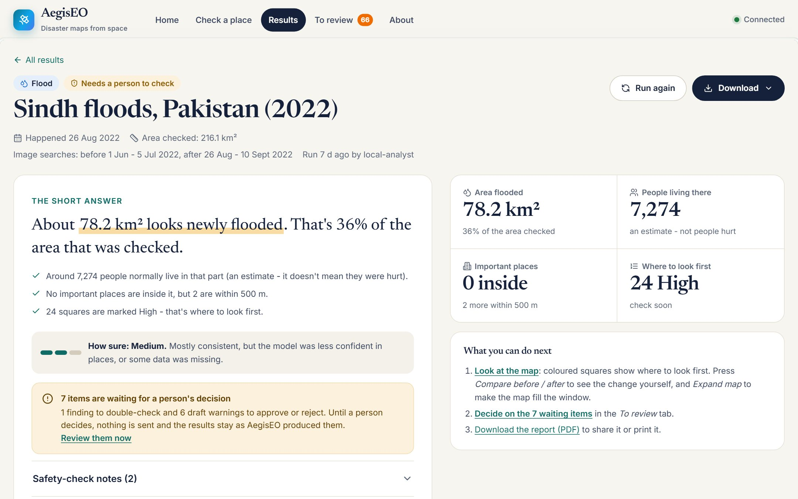

Abstract—After a flood, wildfire or landslide, responders must learn quickly where the land surface changed, who may be exposed, and which places to inspect first, often while clouds hide the ground from optical satellites. We present AegisEO, a full-stack system that answers these questions from free Sentinel-1 radar and Sentinel-2 optical imagery. An agent searches the public archives, checks image quality, maps change with a calibrated gated-fusion U-Net that is aware of which sensor actually observed each pixel, intersects the result with population, facility and road layers, ranks 0.5–1 km grid cells with explanations, and drafts alerts whose every number is checked against recorded evidence. Uncertain or consequential findings are routed to a human reviewer; nothing is published without a named approver. On the Sen1Floods11 test split the deployed model reaches a water IoU of 0.844 with both sensors, 0.739 under 50 % simulated cloud and 0.653 with no optical data, against 0.431 for classical SAR thresholding and 0.419 for an optical-only network under cloud. Temperature scaling lowers the expected calibration error from 0.014 to 0.005. In a 12-scenario closed-loop benchmark and 8 safety probes the agent passed every case and escalated exactly the three cases that needed a person.
Index Terms—synthetic aperture radar, multispectral imaging, image fusion, change detection, semantic segmentation, U-Net, flood mapping, uncertainty calibration, AI agents, human-in-the-loop.
I. Introduction and Problem Statement
Satellite images are one of the few sources that cover a whole disaster area within days of the event. Two free image streams from the European Copernicus programme are relevant: Sentinel-2, a multispectral optical sensor (10–20 m) whose images are easy to interpret but blind under cloud, and Sentinel-1, a C-band synthetic aperture radar (SAR) that images through cloud and at night but suffers from speckle noise and ambiguous returns (smooth roads look like water; flooded buildings appear brighter, not darker). Floods, the most frequent disaster type, almost always coincide with heavy cloud.
Producing a water map is not enough. A person deciding where to send help needs to know where the surface changed relative to before the event, what lies there (people, hospitals, roads), which places to look at first, and how far the result can be trusted. Today this chain involves several specialists and tools and takes hours to days.
Problem statement. Given an area of interest (0.25–1500 km²), a hazard type and an event date, automatically find suitable pre- and post-event radar and optical images, detect the change robustly when one sensor is missing or clouded, estimate exposure, rank response areas with explanations, and report results honestly, so that a non-specialist can act on them under human control.
Contributions. (1) A sensor-validity-gated fusion network with a radar fallback and calibrated per-pixel uncertainty; (2) an explicit agent loop with 20 typed tools and 18 guardrails that ends in honest terminal states; (3) an INFORM-style hazard × exposure priority grid with sensitivity analysis; (4) evidence-grounded alert drafting with mandatory human approval; and (5) a measured evaluation on a public benchmark, a behavioural agent benchmark and five real historical events.
II. State of the Art
Classical image processing. Operational SAR flood mapping thresholds the backscatter histogram, typically with Otsu’s method [3] applied per scene or per tile [4], after speckle suppression such as the Lee filter [7]; change is found from the log-ratio of pre- and post-event images. Optical methods use spectral indices: the modified normalised difference water index MNDWI [5] for water and the differenced normalised burn ratio dNBR [9] for burn severity. These are fast and transparent but sensitive to the scene, and optical indices fail under cloud.
Deep learning. U-Net [2] is the standard encoder–decoder for segmentation of remote-sensing images. Sen1Floods11 [1] provides 446 hand-labelled co-registered Sentinel-1/2 chips from 11 flood events and showed that learned models outperform thresholding. Konapala et al. [6] studied combining Sentinel-1 and Sentinel-2 for inundation mapping and found that fusion helps, but most published fusion models assume that both sensors are always present and clear.
Trust and decision support. Modern networks are over-confident; temperature scaling [10] and Monte-Carlo dropout [11] give calibrated probabilities and uncertainty estimates. Risk indices such as INFORM [12] combine hazard and exposure multiplicatively. Language-model agents that interleave reasoning and tool use [13] are increasingly used for automation, but their outputs can contain unsupported numbers.
Gap. We did not find an open system that joins these parts: robust fusion under missing sensors, calibrated uncertainty, exposure-based ranking, and an auditable agent that refuses to over-claim and keeps a human in charge. AegisEO addresses this gap.
III. Data Sources
All inputs are free and public (Table I). Per analysis, only windows covering the area are read from cloud-optimised GeoTIFFs through the Microsoft Planetary Computer STAC catalogue, reprojected to a common UTM grid (20 m by default) and cached. Sentinel-2 values are converted to reflectance with the processing-baseline offset and masked with the scene classification layer; Sentinel-1 RTC γ0 is harmonised to σ0 (the training domain), and pre/post radar pairs are matched by relative orbit.
| Purpose | Dataset |
|---|---|
| Radar | Sentinel-1 GRD RTC, VV + VH |
| Optical | Sentinel-2 L2A reflectance + SCL mask |
| Terrain / water / land | Copernicus DEM GLO-30, JRC surface water [8], ESA WorldCover |
| Population | HRSL [14]; WorldPop totals as cross-check |
| Facilities, roads | OpenStreetMap (Overpass API) |
| Event context | GDACS, USGS, NASA FIRMS, Open-Meteo ERA5 |
| Training / test | Sen1Floods11 v1.1 hand-labelled [1] |
Sen1Floods11 is split into 252 training chips, a validation split, a 90-chip test split and 15 chips of the unseen Bolivia event.
IV. Methodology

A. Agent loop
An orchestrator coordinates five specialist agents (acquisition, perception, impact, prioritisation, reporting) through a typed tool executor that enforces an allow-list, a call budget and declared side effects (read-only, compute, write-draft, external). Every tool call, decision and guardrail outcome is stored as a trace. Planning rules P0–P9 cover window extension when no image is found, orbit matching, choosing the clearest optical image, a radar-led re-run under heavy cloud, and graceful degradation when a source fails. Algorithm 1 summarises the loop.
- Input: area A, hazard h, event date t
- if not Validate(A, h, t) then return rejected
- M ← Recall(earlier analyses and corrections of A)
- S ← SearchArchive(S1, S2, A, t); widen window if empty
- (pre, post) ← SelectPairs(S) by orbit and cloud cover
- if no usable post-event image then return insufficient_data
- P, U ← FusionModel(post, validity masks); same for pre
- C ← Ppost·(1−Ppre), remove permanent water and steep terrain
- R ← LogRatio(Lee(SAR)), ΔMNDWI; agreement a(C, R)
- flags ← ResultChecks(U, extent, a, scene type)
- for each cell g in grid(A) do
- Hg, Eg ← hazard and exposure of g; scoreg by (2)
- Stability ← 200 Monte-Carlo weight perturbations
- D ← DraftAlerts(); reject any text with an unsupported number
- if flags require a person then status ← needs_review
- return layers, ranked cells, drafts, trace, status
B. Water segmentation and sensor fusion
All learned models share a U-Net backbone (channel widths 16–128) trained identically for 40 epochs with binary cross-entropy plus Dice loss, no-data masking, radiometric domain randomisation, simulated clouds and sensor dropout; the checkpoint is chosen on validation IoU. We compare classical baselines (per-scene Otsu on VV and VH, MNDWI > 0, a rule-based fusion), single-sensor U-Nets, early fusion of all 13 channels, and our gated fusion network. Gated fusion uses separate radar and optical encoders; at every scale a learned gate mixes the two feature maps, multiplied by per-pixel validity masks so that the network cannot use optical features under cloud or outside the swath. Version 2 adds stronger sensor dropout. In the deployed hybrid, pixels observed only by radar take the output of the calibrated radar specialist, blended smoothly across cloud edges. The configuration is selected automatically on the validation split, so test and Bolivia results stay unbiased. Temperature scaling (T = 1.66) calibrates probabilities and last-layer MC dropout gives per-pixel uncertainty.
C. Change detection
For floods, the probability of new water is computed by post-classification comparison:
Pnew = Pwater,post · (1 − Pwater,pre) (1)
with JRC permanent water (occurrence ≥ 80 %) removed. Independent corroboration comes from the Lee-filtered SAR log-ratio and the MNDWI change; their agreement with the model is reported and checked. Terrain plausibility removes steep slopes and pixels far above drainage. Wildfire uses dNBR with FIREMON severity classes [9] confirmed by VH backscatter drop and FIRMS hotspots; landslide candidates combine NDVI loss, slope and SAR change and are always sent to review.
D. Exposure and prioritisation
Detections are intersected with dasymetric population, facilities (inside or within 500 m), roads and land cover, and reported as potentially exposed. Each 0.5 km (area < 50 km²) or 1 km cell receives
score = 100 · Hα · E1−α, α = 0.5 (2)
where H combines detected fraction and intensity and E combines log-scaled population, weighted critical facilities and road access. Cells are Critical (≥ 70), High (≥ 50) or Moderate (≥ 30). A life-safety floor raises a cell to High when a hospital, fire station or shelter lies inside the detected extent. Confidence is reported separately and never lowers priority, so uncertain but severe cells are checked rather than hidden. A 200-draw log-normal perturbation of the weights gives each cell’s rank stability.
E. Grounded reporting and human review
Summaries and alert drafts are generated from templates (optionally by a language model) and verified: every number, date and citation must match a recorded fact (G16), and casualty claims or directive orders are blocked (G17). Alerts stay drafts until a named analyst approves them, and alerts from simulated data can never be delivered (G18). Analyst corrections are stored and recalled the next time the same area is analysed.
V. Implementation
The backend is a Python FastAPI service (PyTorch on CPU, rasterio, NumPy) exposing 35 endpoints with strict schema validation; each analysis runs as a background job. Results are stored in SQLite or PostgreSQL + PostGIS (13 tables, including tool calls, guardrail checks and an audit log); artefacts are exported as GeoTIFF, GeoJSON, CSV and PDF. The frontend is a React + TypeScript single-page application with MapLibre maps: a four-step wizard with place search and live archive preview, a result workspace with before/after comparison, explanations and the decision trace, and a review queue (Fig. 2). The system includes role-based tokens, rate limiting, retries with circuit breakers, offline caching, Prometheus metrics and a Docker Compose deployment. Verification: 93 backend tests (unit, integration, API, failure injection, security; one live-network test), 32 frontend unit tests, 7 Playwright end-to-end journeys on desktop and phone, and lint and type checks, all passing.

VI. Results
A. Water segmentation (Sen1Floods11)
Table II reports water IoU on the 90-chip test split under four conditions and on the unseen Bolivia event.
| Method | Test | 50% cloud | No S2 | No S1 | Bolivia |
|---|---|---|---|---|---|
| Otsu VV [3] | 0.431 | 0.431 | 0.431 | – | 0.575 |
| MNDWI [5] | 0.653 | 0.378 | – | 0.653 | 0.556 |
| S1 U-Net | 0.653 | 0.653 | 0.653 | – | 0.520 |
| S2 U-Net | 0.833 | 0.419 | – | 0.833 | 0.818 |
| Early fusion | 0.828 | 0.691 | 0.555 | 0.824 | 0.818 |
| Gated fusion v2 | 0.844 | 0.722 | 0.612 | 0.836 | 0.827 |
| Deployed hybrid | 0.844 | 0.739 | 0.653 | 0.836 | 0.828 |
The deployed model reaches F1 0.915 (precision 0.932, recall 0.899) on the test split. Under 50 % cloud it keeps 88 % of its clear-sky IoU, whereas the optical-only network keeps 50 %. Calibration lowers the expected calibration error from 0.014 to 0.005 and the negative log-likelihood from 0.097 to 0.072. MC-dropout entropy separates wrong from correct pixels with AUROC 0.885; keeping the 90 % most confident pixels raises IoU from 0.816 to 0.939. The weakest regime is radar-only on the unseen event, where per-scene Otsu on VH (0.645) beats all learned radar models (0.520), which shows limited radar training diversity.
B. Agent benchmark
The full agent was run on 12 simulated scenes with known ground truth, each designed to test one behaviour (heavy cloud, missing sensor, orbit mismatch, source outages, corrupted data, missing model, invalid input), plus 8 probes that try to make it act unsafely. All 12 cases and 8 probes passed. Escalation recall and precision were both 1.0, every drafted alert passed the grounding check, and the trace was complete in every case. Under 90 % cloud the agent let radar lead and still reached IoU 0.874; with no radar and 85 % cloud it reached only 0.129 and correctly escalated instead of reporting a confident map. These scenes are simulated, so they test behaviour, not real-world accuracy.
C. Real historical events
Five past events were analysed end to end with live archive data (Table III). First runs took 5–10 minutes, mostly image download; cached re-runs took 2–25 s with identical numbers. Visual checks against post-event imagery agree with the maps. There is no pixel-level ground truth for these events, so they validate the workflow and the agent’s judgement rather than accuracy. These runs also exposed four defects that tests had missed, all of which were fixed.
| Event | Status | Extent km² | People* | Top |
|---|---|---|---|---|
| Sindh flood 2022 | review | 78.2 | 7,274 | High |
| Emilia-Romagna 2023 | warnings | 31.6 | 118 | High |
| Derna 2023 | review | 0.03 | 18 | Mod. |
| Palisades fire 2025 | review | 53.9 | 14,407 | Crit. |
| Wayanad slide 2024 | review | 4.7 | 60 | Mod. |
* potentially exposed, within the analysed area.
VII. Novelty and USP: Digital Image Processing
The core of AegisEO is a complete digital image processing (DIP) chain that turns raw satellite rasters into a decision map. Table IV lists each operation and where it is implemented.
| Stage | Operation (source file) |
|---|---|
| Geometric | Reprojection and resampling to one UTM grid (geo/raster.py) |
| Radiometric | Reflectance offset, γ0→σ0, dB scaling (sources/imagery.py) |
| Masking | SCL cloud/shadow masks, validity masks (sources/imagery.py) |
| Enhancement | Lee speckle filter on SAR (analysis/sar.py) |
| Band arithmetic | MNDWI, NDVI, NBR/dNBR (analysis/indices.py) |
| Segmentation | Otsu threshold; gated-fusion U-Net (ml/) |
| Change detection | SAR log-ratio; post-classification comparison (1) |
| Morphology | Opening, minimum mapping unit (geo/vector.py) |
| Vectorisation | 8-connected region to polygon extraction (geo/vector.py) |
- Sensor-aware fusion: validity-masked gates and a radar fallback keep accuracy under cloud (0.739 vs 0.419 for optical only) instead of failing silently.
- Classical and learned processing together: the classical DIP results (Otsu, log-ratio, spectral indices) act as independent cross-checks of the network, and their agreement is reported to the user.
- Calibrated trust: each pixel carries a calibrated probability and an uncertainty, and confidence is shown next to priority instead of lowering it.
- Auditable agent with honest outcomes: 18 guardrails, a full decision trace and terminal states such as needs_review or insufficient_data.
- Grounded alerts and human control: no number can appear in an alert without a recorded source, and nothing is published without a named approver.
VIII. Limitations and Conclusion
AegisEO maps flood extent only; flooding that recedes before the next satellite pass is missed, and C-band radar under-detects water among buildings and under vegetation. The water model saw 10 training events, so arid, snowy and dense urban scenes are under-represented (guardrail G11 flags such inputs, as on the Sindh case). Exposure layers are of uneven completeness, priority weights are expert-set rather than fitted to response outcomes, and the wildfire and landslide modules are index-based and only qualitatively checked.
We have shown that combining sensor-aware fusion, calibrated uncertainty, exposure-based ranking and a guarded agent gives disaster maps that are both more robust and more honest than either classical thresholding or a single-sensor network. Future work includes more radar-only training data, urban flood detection with SAR coherence, flood depth from elevation data and user studies to calibrate the priority weights.
References
- D. Bonafilia, B. Tellman, T. Anderson, and E. Issenberg, “Sen1Floods11: A georeferenced dataset to train and test deep learning flood algorithms for Sentinel-1,” in Proc. IEEE/CVF CVPR Workshops, 2020, pp. 210–211.
- O. Ronneberger, P. Fischer, and T. Brox, “U-Net: Convolutional networks for biomedical image segmentation,” in Proc. MICCAI, 2015, pp. 234–241.
- N. Otsu, “A threshold selection method from gray-level histograms,” IEEE Trans. Syst., Man, Cybern., vol. 9, no. 1, pp. 62–66, 1979.
- A. Twele, W. Cao, S. Plank, and S. Martinis, “Sentinel-1-based flood mapping: A fully automated processing chain,” Int. J. Remote Sens., vol. 37, no. 13, pp. 2990–3004, 2016.
- H. Xu, “Modification of normalised difference water index (NDWI) to enhance open water features in remotely sensed imagery,” Int. J. Remote Sens., vol. 27, no. 14, pp. 3025–3033, 2006.
- G. Konapala, S. V. Kumar, and S. K. Ahmad, “Exploring Sentinel-1 and Sentinel-2 diversity for flood inundation mapping using deep learning,” ISPRS J. Photogramm. Remote Sens., vol. 180, pp. 163–173, 2021.
- J.-S. Lee, “Digital image enhancement and noise filtering by use of local statistics,” IEEE Trans. Pattern Anal. Mach. Intell., vol. PAMI-2, no. 2, pp. 165–168, 1980.
- J.-F. Pekel, A. Cottam, N. Gorelick, and A. S. Belward, “High-resolution mapping of global surface water and its long-term changes,” Nature, vol. 540, pp. 418–422, 2016.
- C. H. Key and N. C. Benson, “Landscape assessment: Ground measure of severity, the composite burn index; and remote sensing of severity, the normalized burn ratio,” USDA Forest Service, Gen. Tech. Rep. RMRS-GTR-164-CD, 2006.
- C. Guo, G. Pleiss, Y. Sun, and K. Q. Weinberger, “On calibration of modern neural networks,” in Proc. ICML, 2017, pp. 1321–1330.
- Y. Gal and Z. Ghahramani, “Dropout as a Bayesian approximation: Representing model uncertainty in deep learning,” in Proc. ICML, 2016, pp. 1050–1059.
- T. De Groeve, K. Poljansek, and D. Ehrlich, “Index for Risk Management – INFORM: Concept and methodology,” European Commission JRC, Tech. Rep. EUR 26528, 2015.
- S. Yao et al., “ReAct: Synergizing reasoning and acting in language models,” in Proc. ICLR, 2023.
- T. G. Tiecke et al., “Mapping the world population one building at a time,” arXiv:1712.05839, 2017.